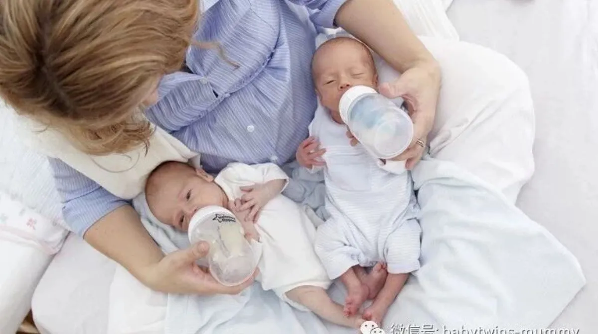

来这里找志同道合的小伙伴！
文|圆圈妈 图片|来自网络
因为我的身体原因，圆圈哥俩没有喝过一口母乳。
就是说圆圈从出生到现在，都是纯配方奶养大的！
这是我这辈子心口永远的痛了！
虽然他们的身高体重智力发育并不比同龄的孩子差，
但是没有母乳喂养，我与圆圈的亲子关系总是怪怪的，有一种无法言喻的疏离感。
虽然他们也很粘着我，但是我对他们总有一种若即若离的感觉。
但今天的主题不是这个哈。
因为圆圈是纯配方奶喂养的孩子，所以有很多这方面的经验跟大家分享，
这篇就介绍纯配方奶喂养的必备用品。
奶粉
说到买奶粉，大家第一个反应就是，
去香港买！找代购！网上海淘！反正不买国产的！
是的，我也是跟你们一样俗。反正不买国产的！
也许国产的奶粉也有质量好的，但是大家都买进口牌子，我哪好意思给圆圈喝国产的。
以至于除了奶粉，圆圈用的东西基本上全部是进口的！
问题来了，既然选定进口品牌，那什么牌子呢？进口品牌也不少啊，
美素，喜宝，爱他美….
个个都是大牌，个个都号称绝对可以把孩子养得白白胖胖的。
我最终选了美素，圆圈的第一段，第二段都是用美素这个品牌。
没有别的原因，因为最便宜。
第三段用的是喜宝，因为美素三段太甜了。喜宝口感比较好。
在我觉得，这些品牌配方奶，并无实质性和根本性的差异，圆圈不会因为没有喝喜宝就长不高长不壮。一般正规渠道买的大品牌配方奶通常是放心购买的啦！因此宝妈不必在奶粉的品牌上过分纠结，而更应该考虑的是以下几点：
1，配方奶的货源是否可靠。
不管是自己去香港买还是代购还是海淘，都要确保货源的安全可靠,。
品牌还是其次，主要是“系唔系坚嘢黎嘎？”（是不是正货）
2，首次购买，不要囤太多货。
因为不确定宝宝是否接受这种口味，因此，为了避免浪费，最好买最小包装的奶粉先试用。
我选美素的一个很重要原因是，美素有纸盒装的，内有三袋独立包装。
就算圆圈喝了不合适，剩下的还可以封存起来，给有需要的亲戚朋友。
3，注重配方奶的成分。
值得划重点的是，有些宝宝天生有过敏体质，比如对鸡蛋过敏，对牛奶过敏等.
因此在品牌选择上，要侧重于考虑配方奶的成分，看下是否有导致宝宝过敏的过敏源。
4，不要选爆款奶粉。
这个小贴士很重要！简直是血淋淋的教训啊。
比如美素，经常跑香港买奶粉的都知道啦，万宁，屈臣氏甚至大大小小的药房，都直接在门口放块招牌“美素冇货（没货）”。
犹记得我和圆圈爸跑香港买美素的那些苦逼日子，我真恨不得自己就是头奶牛，让我得乳腺炎，发高烧，忧郁症都可以，实在受不了去香港人挤人还被人各种嫌。
奶瓶
对于奶瓶的选择上，我没有丝毫的纠结，不管啥品牌，选宽口径的，买玻璃材质的就对了。
宽口径方便清洗，一把长刷子伸进去搅几下就OK 了。玻璃材质容易打碎。
我反正已经不知道在哪个月黑风高的夜晚，迷迷糊糊给圆圈喂奶时，摔碎了多少个瓶子。只知道摔一个就是100多个大洋啊！
即便如此，依然毫不犹豫买玻璃材质。
我总感觉，再高大上的PP材质奶瓶都有一股塑料味。而这些似有若无的味道让我觉得塑料材质都不适合给婴幼儿使用。
其次奶嘴的选择也很重要。推荐那种仿真造型的奶嘴，如同妈妈亲喂时的乳房形状，让宝宝觉得自然易接受，有利于宝宝下颚健康发育。
鉴于双胞胎宝宝的特殊性，奶瓶要买多少个比较合适呢？这个因人而异。
我给圆圈每人2个奶瓶，一个240ML用于喝奶，一个120ML用于喝水。这个没有严格规定，每个家庭都有差异性，可根据实际情况准备奶瓶数量。比如不差钱的可以多囤货哈。
奶瓶刷+奶瓶清洗液
奶瓶要定期清洗，这个很关键！
你试试看，你每天用的碗筷不洗，丢在厨房，分分钟苍蝇满天飞。
宝宝的奶瓶更加要小心伺候着。
我们家时刻坚持“三天一大洗，每次一小洗”的原则。
每次喝完之后，用冷水冲洗掉剩余的奶，再用开水过一下。每隔三天，用奶瓶液清洗一遍奶瓶，再放入开水煮十分钟。
注意，必须是婴儿专用的奶瓶清洗液，不分品牌，只要成分简单温和就行。
切记不要用洗洁精！
之前有宝妈建议我用蒸汽消毒锅，简便快捷又有效。如果经济基础允许，自然是最好不过啦。巴不得尿不湿循环利用的我肯定是没有这个条件的了，只好用简单粗暴的办法：用开水烫！
而且我相当强迫症，觉得那些顽强的小细菌，区区水蒸气能奈何得了它们呢？
还是放进滚烫的开水折磨十分钟，比较痛快点哈！
圆圈的奶奶买了个超大铁锅，所有奶瓶，奶嘴，手柄等配件全都丢到一大锅里煮。
前提是塑胶配件要耐高温的哦！
这个“三天一大洗，每次一小洗”的原则一直坚持到圆圈一岁半，后面就个把月甚至两三个月才清洗一次了。我给自己编了个很正当的理由，不干不净吃了没病，孩子长期生活在无菌环境对他们的身体抵抗力没有好处。
因此就很心安理得地偷懒了。这个坏榜样，宝妈不要效仿哈！
奶瓶晾置架
洗完奶瓶之后，最好准备个晾置架子，这个在某宝一搜到处都是，很容易买到。
但不要贪便宜，要买那种塑胶件支架牢固的，不易折断的。
划下重点，必须是易拆卸安装清洗的，因为奶瓶晾置架经常会有奶瓶掉水下来，潮湿容易滋生污垢细菌，因此要隔三五天清洗一次。
把清洗好的奶瓶，倒扣在支架上，沥干水，让奶瓶时刻保持干燥。
尤其是南方，有回南天的时候，小小奶瓶晾置架真的很有用处，倒扣的奶瓶除了可以沥干水，又不怕灰尘进去，简直完美。我一直用到圆圈2岁半。
温奶器
个人呢觉得这个很鸡肋。
其实原理很简单，它就是一个放置在电子加热板上的一个水壶，可以调节具体的温度。比如40° 80° 100°，每次冲泡奶粉的时候就可以直接倒出温度合适的水。
虽然看着很实用，有商家还宣称不出一分钟就搞定宝宝的奶粉。
我信了，真买了一个。试用之后我笑了，还不如我直接冷热水兑。
刚开始没经验，要不太冷，要不太热。兑久了有经验了半分钟就可以调好。
现在我们全家别的不会，最拿手的绝招就是一分钟之内冲泡奶粉，而且又快又准又好喝。
这全都是给圆圈那饥饿时鬼可狼嚎的样子给逼出来的！
如果不差钱，标配个温奶器也不赖，尤其是人手不足的情况下，确实帮了不少忙。
安抚奶嘴
这个圆圈没有用过！
我买奶瓶的时候，商家送了一只给我，我有两个孩子只有一个奶嘴，我觉得寓意不好，就压箱底，无论圆圈怎么鬼哭狼嚎，嘶声揭底我都没有想过用安抚奶嘴。
圆圈的奶奶也很反感用安抚奶嘴，说是会影响牙齿长不好。说对门那孩子三岁了，还在用安抚奶嘴，牙齿长得七上八下的，大人想要摘掉，被那孩子一哭二闹三上吊地拒绝了。
等哪天我不小心找到那个安抚奶嘴想要给大哭大闹的圆圈试试看时，被圆圈一脸嫌弃地吐掉了。
我看到国外很多大宝小宝都在用，小婴儿是否可以用安抚奶嘴，众说纷纭！
反正不管用还是不用总有很多科学的道理，总有很多育儿达人或者儿保专家教授挑出来说这个行，说那个不行。
至于到底能不能用，管不管用，还是看宝宝的是否接受。再者，安抚奶嘴用到什么时候，家长得有分寸，不然宝宝长大还要含着安抚奶嘴，实在显得突兀了点。
为避免广告嫌隙，
我就没有在文章中提到奶瓶，奶嘴等物品的品牌了。
如有需要可以给我留言或者发消息哦。
*作者简介：圆圈妈，家有孖仔男两枚，立志做一名合格的80后全职妈妈。
微信公众号ID：babytwins-mummy 孖仔帮
个人博客：三个男人（www.sgguy.com）
一个专注双胞胎群体的网站，面向家长，每天分享亲子养育知识
目前孖仔帮建立了微信群
孖仔帮双胞胎孕期群&孖仔帮双胞胎养育群
家长们可以根据需要进入任意一个群
想要进入孖仔帮的微信群
可以加圆圈妈的微信。
由圆圈妈邀请入群
欢迎加入双胞胎大家庭
让我们一起学习成长，快乐育儿！
↓点击下方“阅读原文”查看更多
